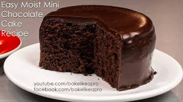

Tiny Chocolate Cake
Itty bitty choccy cake. Perfect for a tiny treat. Recipe by
BakeLikeAPro.
Ingredients
- Egg 1 medium one
- Milk 3 tbsp
- Granulated sugar 4 tbsp
- Vegetable oil 3 tbsp
- Salt 1/4 tsp
- Cocoa powder 3 tbsp
- Flour 4 tbsp
- Baking powder 1 tsp
Instructions
- Whisk the egg and milk in a bowl.
- Add the sugar, vegetable oil and salt. Mix until combined.
- Sift in flour, baking powder and cocoa powder. Mix until combined.
- Pour the batter into an itty bitty cake tin lined with baking sheet.
- Bake at 180 degrees celcius for 25 minutes.
- Let it cool completely and enjoy your itty bitty treat!

image source: BakeLikeAPro
BACK TO HOMEPAGE